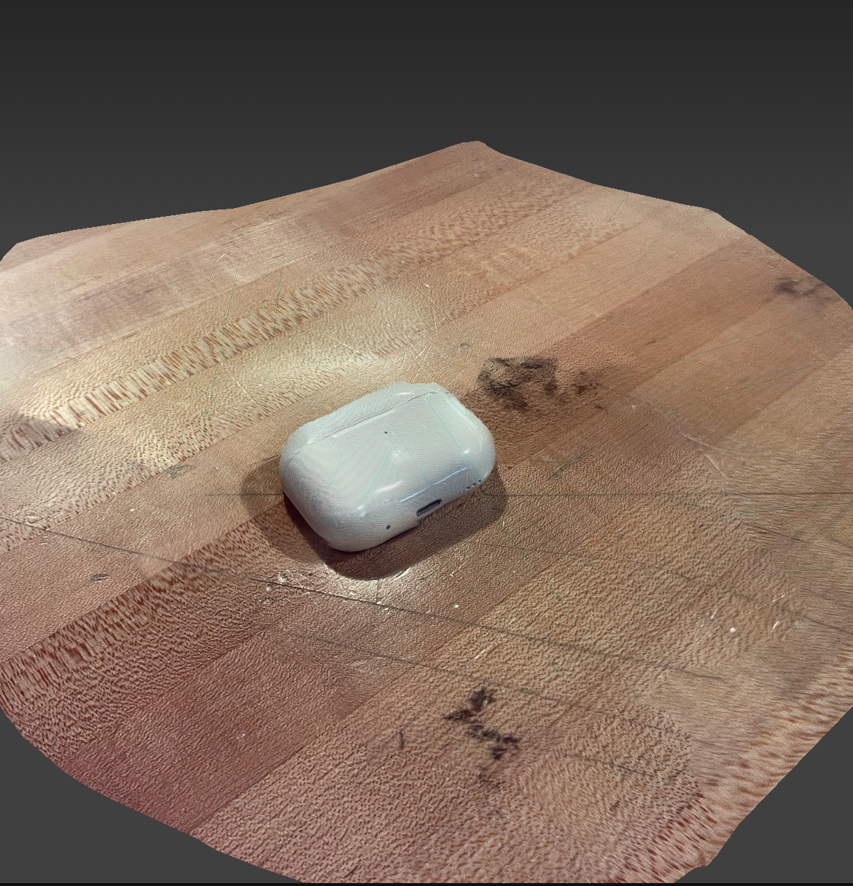
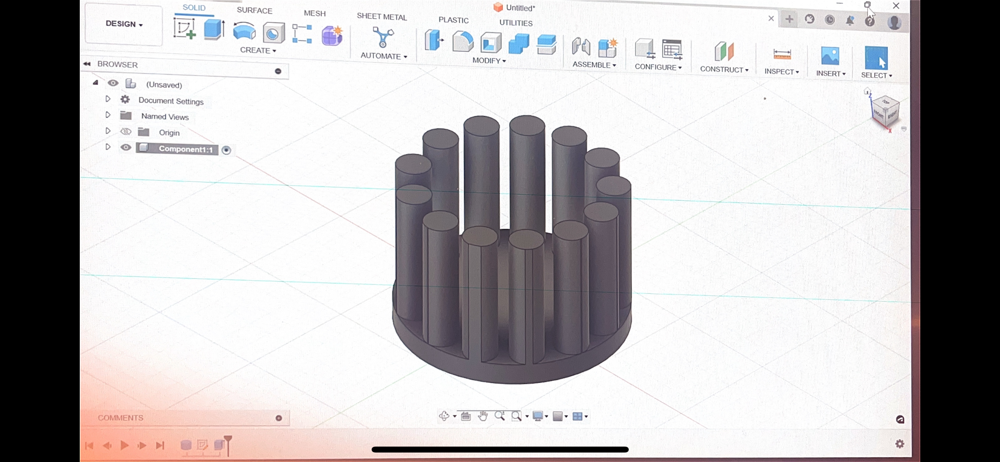

3D Scanning
For this portion of the mini project I wanted to scan something rather simple as this is my first time using this software and I also saw fellow peers struggling with much more intricate objects such as a face. This is why I chose my AirPods to scan as it is something I use daily and its also not too complicated. For the most part this scan came out good however it is a bit rough on the top and sides. What I learned from this was to take a little more time to refine certain parts of the scan and to be very patient while doing so. This is a very delicate software that should be handled with patience.
3D Modeling
I was tasked with making a 3D model that is impossible to be made using deductive/subtractive methods I at first tried to make a "fidget cone" type of object but realized this would be a lot tougher and time consuming than I had anticipated. From here I had an idea one of the things I was inspired by was similar to a raffle ticket spinner so I decided to go with that idea. As you can see above I started with a base of a circle and created sketches on where I wanted the pillars to be that would keep my object inside this "prison".
Here I simply extruded the pillars I had created and at this point I had realized this looks almost like a jail cell or bird cage for the object I would put inside. The only things im currently missing is the roof of the "cell" as well as the actual object inside so this would not be possible using subtractive methods.
This is the final model of the "bird cage" which I created. The additions in this picture include the roof as well as the ball which is a bit harder to see but it is in the middle of the cage. To make sure this would print as smoothly as possible I had to include a little "stand" for the ball so it would be attatched to the cage but easy to remove. This was a bit challenging but it was fun to finally execute.